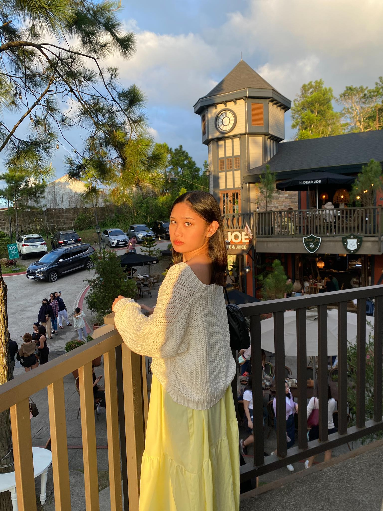

About Me
Hello, I'm Marietta, an enthusiastic IT student at FEU Institute of Technology, specializing in creating captivating and functional websites. My expertise in web design has been cultivated through my studies at FEU Institute of Technology.
My journey began at FEU TECH, where I have engaged in diverse projects that have sharpened my skills in HTML, CSS, and other web technologies.
Outside of coding, I indulge in reading and watching anime/manga. I prioritize continuous learning and strive to stay abreast of the latest developments in web development.
Feel free to explore my website to discover more about my work and connect with me!